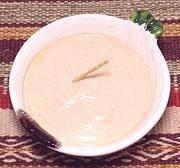

|
Golf Sauce / DipArgentina / Uruguay / Bolivia / etc. - Salsa Golf / Salsa Rosada | ||||
| Makes: Effort: Sched: DoAhead: |
1-1//4 cups * 12 min Yes |
A popular sauce used as a dip for shellfish and potato sticks - also as a sandwich spread, salad dressing, and on appetizers and tapas. Very easy to make. See also Variations. | |||
|
|
1 1/4 1/2 1/2 1/4 tt |
c c T t t |
Mayonnaise (1) Tomato Ketchup Mustard (2) Lemon Juice Salt Tabasco Sauce |
Make - (12 min)
|